For people who review video or design and ask for changes, and for people who receive those requests and want to fix them without guessing.
Pause a video and write PRO
Pause the video you're watching and write a note with that frame and its timecode. Press Enter to save, and playback continues
Where: Alt+Shift+C / the big button in “Review”
While watching a video, press C (Alt+Shift+C for videos in the browser) to pause. The frame and its timecode are recorded, and a box for writing appears below. Write and press Enter to save, and playback continues. Press Shift+Enter for a new line.
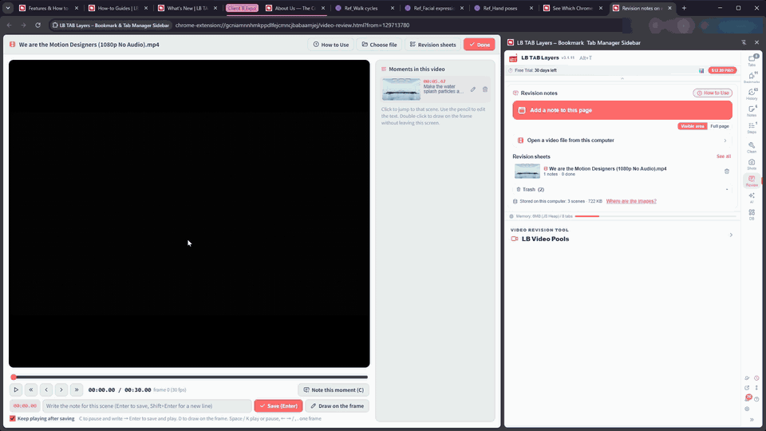
Pause where something catches your eye and write right there. Press Enter to save, and playback continues.
Keep writing (Revision mode) PRO
C to pause and write, D to draw on the frame, comma and period to step one frame, Space to play. Esc to finish
Where: The bar below the video
After your first note you are in “Revision mode”: C pauses so you can write, D lets you draw on the frame, the comma and period keys step one frame at a time, and Space plays or pauses. Press Esc to finish.
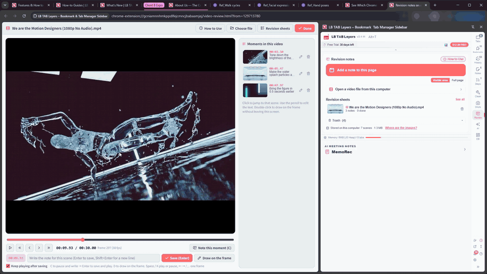
Use comma and period to step frame by frame, and write on exactly the right moment.
Draw on the frame PRO
Mark up the frame with numbered pins, arrows, rectangles, circles, text, a pen, a highlighter and pixelate
Where: “Draw on the frame” in the writing box
The markup screen offers numbered pins, arrows, rectangles, circles, text, a pen, a highlighter and pixelate. There are 6 colors and 3 line widths. Place a numbered pin and a field for that number appears in the list on the right. Press Ctrl+Enter to save.
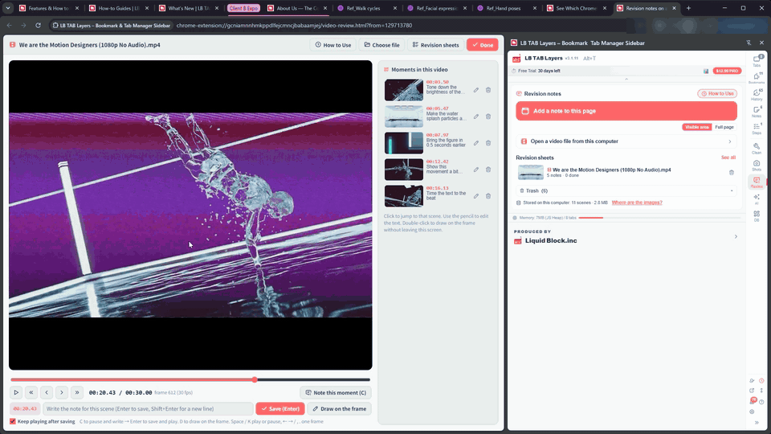
When something is hard to put into words, number it right on the frame.
Revision notes on a page PRO
Capture a web page and write notes with numbered pins (visible area or full page)
Where: The button in “Review”
In the Review view, click “Add a note to this page” to capture the page you're viewing and open the markup screen. Choose just the visible area or the full page.
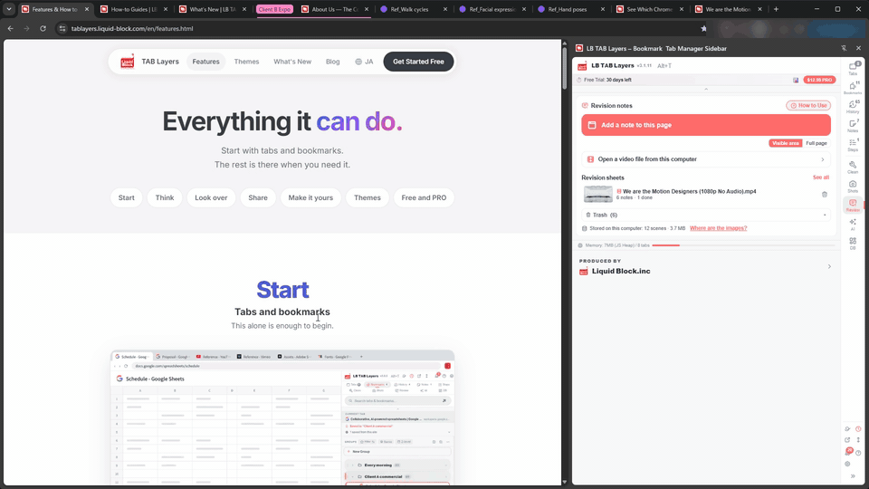
Web pages work the same way: number the spots and write your notes.
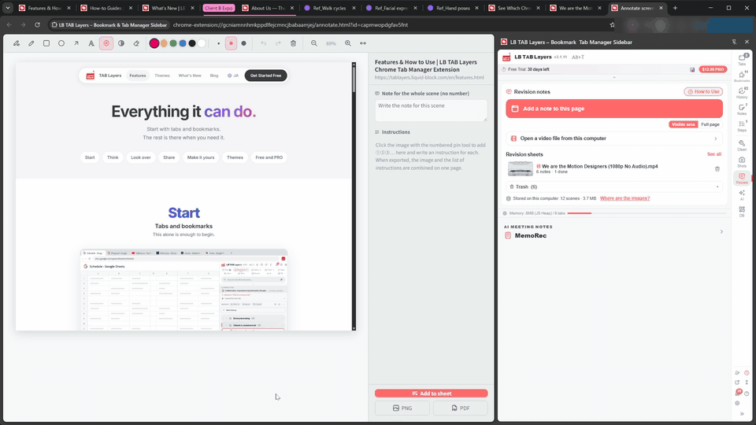
The numbers and their notes are listed on the right.
Revision notes on an image PRO
Right-click an image and write notes on just that image
Where: Right-click an image
Right-click an image on a page and choose “Add revision notes to this image” to pull out just that image and write notes with numbers and text. Your notes go into that page's revision sheet. PRO feature (available during the free trial).
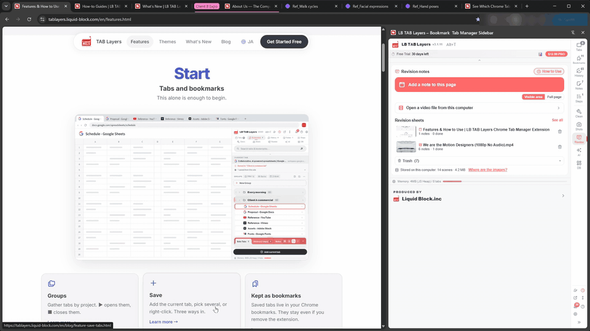
You can also pull a single image out of a page and write revision notes on it. Choose it from the right-click menu.
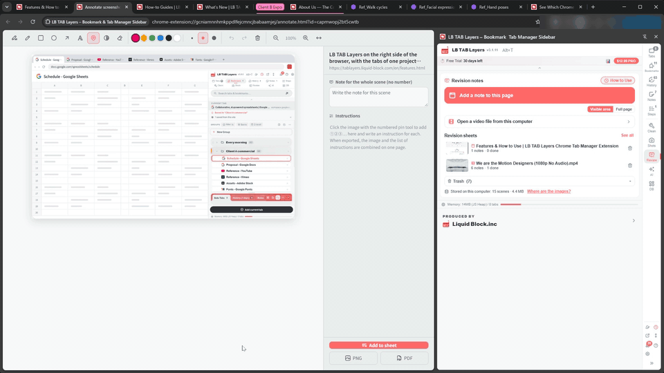
Place a number, write the note, and add it to the sheet.
Video files on your computer PRO
Open a video from your computer and write notes the same way. Nothing is uploaded
Where: “Review” › “Open a video file from this computer”
Open a video file from your computer and write notes the same way. The video plays only on this computer and is never uploaded. Formats the browser can't play, such as ProRes, can't be opened.
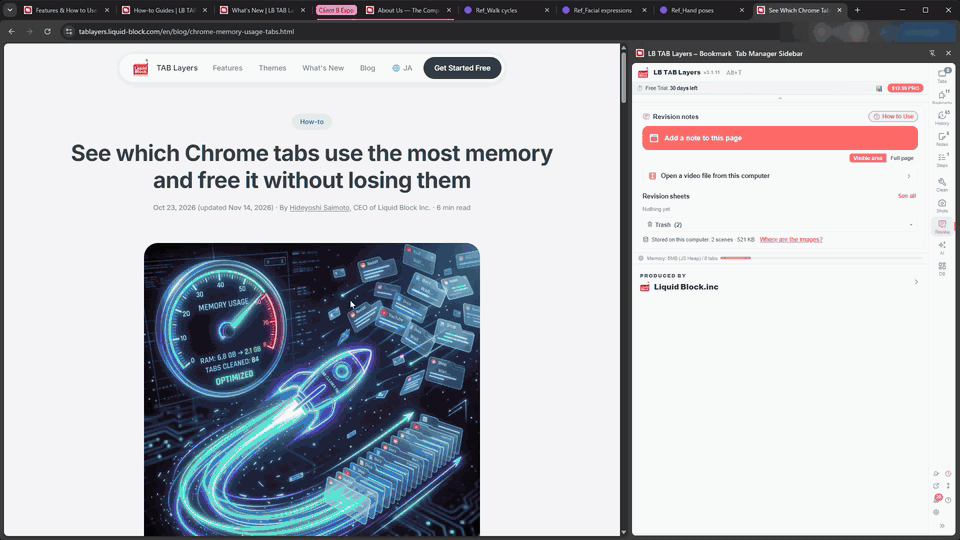
Videos on your own computer work the same way. The video is never uploaded.
Revision sheet PRO
Lists the moments in time order. “Go to this moment” returns to the video. Mark as done, or rewrite
Where: “See all” / “Open sheet” after saving
A revision sheet lists the moments in time order. “Go to this moment” takes you back to that point in the video, “Done” marks a note as fixed, and “Edit notes” lets you rewrite the text.
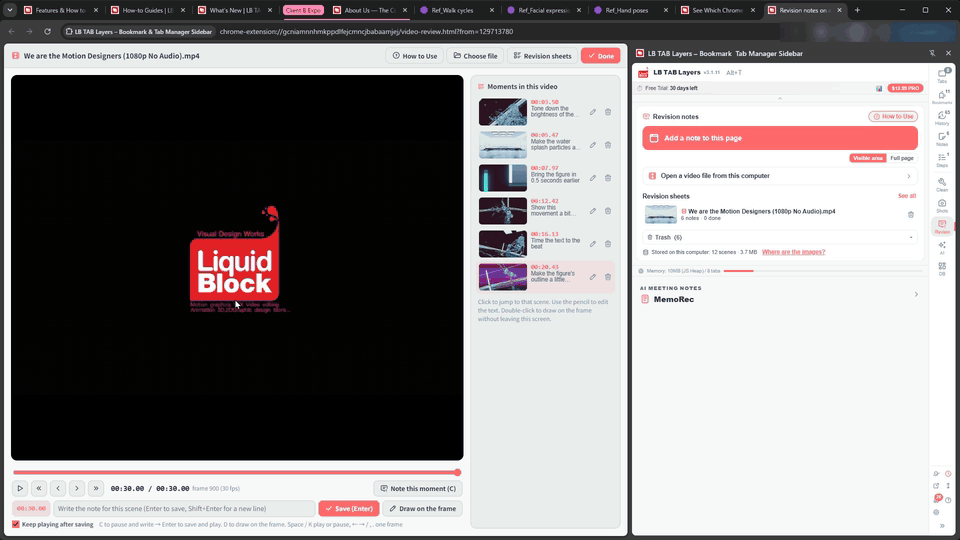
Your notes come together on one sheet, moment by moment.
Versions & time display PRO
Start the next version to keep notes separate by version. Show time in seconds or frames
Where: Top of the sheet
Choose how time is shown: min:sec, frame count, or min:sec:frame. Click “Start version v2” and the notes you add from then on go into the next version, so you can view them version by version.
When a revised cut comes back, start the next version. Notes are kept separate for each version.
Hand over as text PRO
Copy as text (for chat or email). Export as Markdown or CSV
Where: Top of the sheet
“Copy as text” copies your notes as a numbered list (①②③…), ready to paste into chat or email. You can also export them as Markdown or CSV.
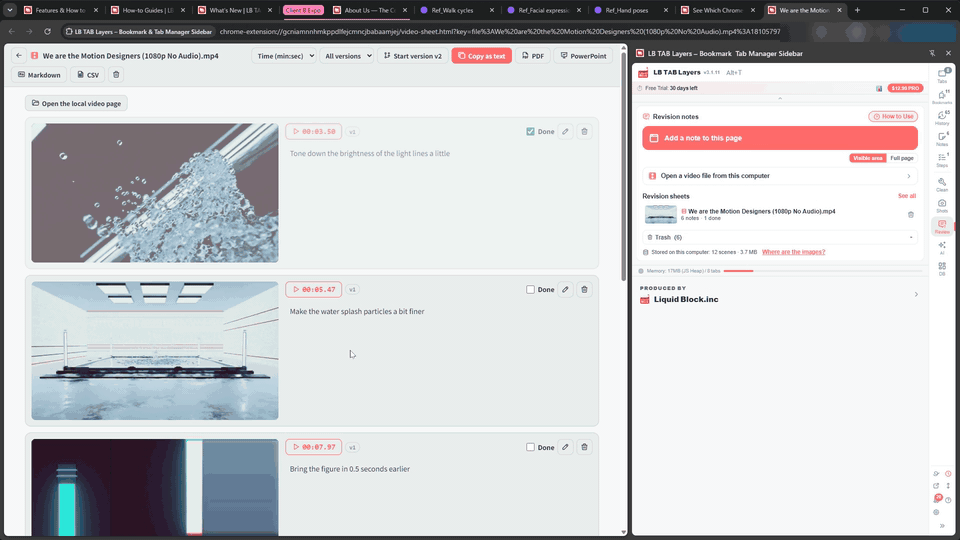
Copy just the text and paste it straight into chat or email.
PDF & PowerPoint PRO
Make a revision document with a cover page (title, organization, reviewer, date, version)
Where: Top of the sheet
Use “Export PDF” or “Export PowerPoint” on the sheet to produce a document with a cover page, a list of the revision points and a page for each moment. The cover details are remembered for each sheet.
Add a cover page and turn it into a PDF or PowerPoint revision document.PowerPoint export works the same way.
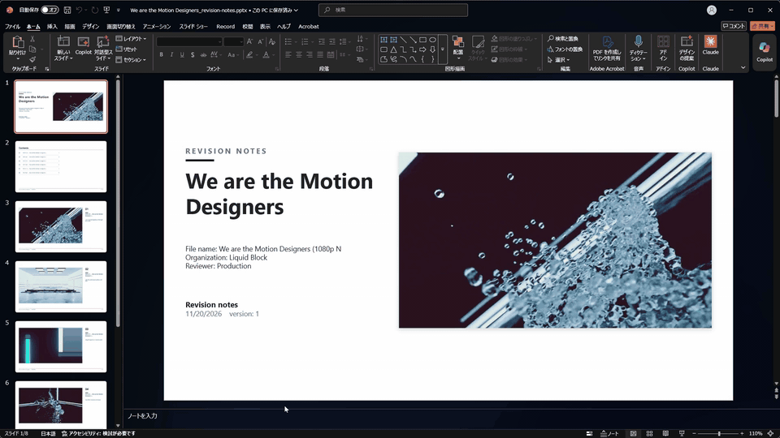
Open it and you'll find a cover, a contents page and a slide for each moment.
Trash & where things are stored PRO
Deleted sheets stay for 30 days. Images exist only on this computer
Where: Bottom of “Review”
Deleted revision sheets stay in the Trash for 30 days and can be restored during that time. Captured images and notes are stored only on this computer and are never sent anywhere.
How to use PRO
A guide to videos, video files on your computer, pages and images, and where things are stored
Where: “How to Use” in “Review”
“How to Use” in the Review view has a guide to videos, video files on your computer, pages and images, and where things are stored.